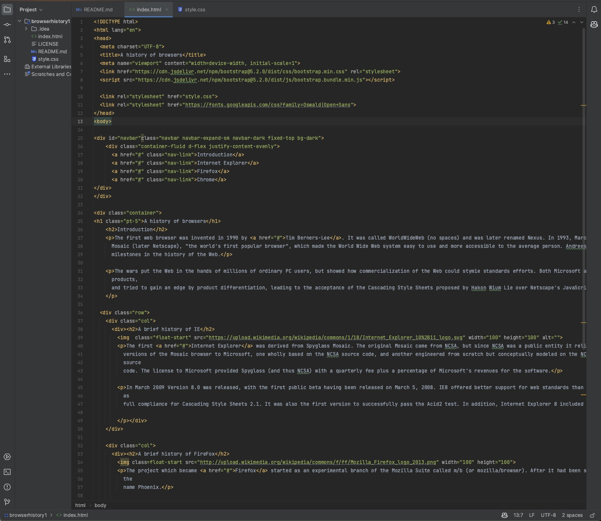
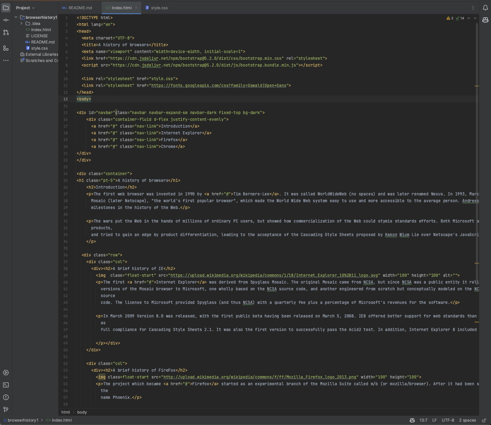

Essential Tools for Software Engineers
04 Oct 2023
Importance of Learning UI Frameworks
In the world of website digitalization, the web page can make or break an individual or overall organization at first glance. The design and user experience of creating a web application play a really big role. While being able to use HTML and CSS can offer the basic building blocks for compiling a website, The use of UI frameworks like BootStrap 5, provides a level of efficiency and sophistication that would be hard to achieve manually. But, why spend the extra time learning this? Why indulge in the intricacies of a UI Framework?
 



Why UI Frameworks?
For the most part, UI frameworks might seem intimidating, But in my opinion, the long-term rewards outweigh the time spent learning. The personal experience I have shared resonates with many other beginner developers going through the same process. Just as a construction worker wouldn’t build a skyscraper brick by brick, a developer benefits from having structured and already defined blueprints at their disposal to format the website.
Pros of learning a UI Framework
Frameworks provide a consistent set of components to use making sure the unified look and feel across the entire webpage is how you truly want it. With the variety of numerous types of UI. Bootstrap 5 for example shines the most with its mobile-first approach. This guarantees that the application will look good for all different kinds of device sizes without additional tweaks from the user. Imagine recreating buttons, navbars, or any type of modern function for a new site using your basic “HTML” and “CSS”. With UI frameworks like Bootstrap, these components are readily available, saving all those hours of development time which is very crucial. The comparison image provided is a really great example of this. The main difference between the code for building the webpage with and without a framework is evident. Besides that frameworks like BootStrap are highly customizable. Many developers have the liberty to override default styles, ensuring they get their own unique style that they pictured in their head and on the website.
Are there any Downsides?
From my personal experience, there are absolutely no downsides in my opinion considering some small issues:
-
Learning Curve: As I mentioned earlier, the overall learning gap is quite steep and stressful to learn, especially for first-time learners. The initial grasp of the framework’s classes, functions, and structure can be scary at first. But like all new things, the first few steps are always hard but it is an investment, once mastered, offering returns outlooking the trials spent learning it.
-
Performance: Using a full framework carelessly can result in bulky websites. The full framework may frequently be incorporated by many developers, which causes slower page loads. Adopting a good strategy and including only the necessary components is essential.
-
Uniformity: If designers don’t stray from the preset styles, websites run the risk of being overly identical. When a popular framework is used frequently, websites might start to look unauthentic and seem repetitive. Overall make sure to stray away from using other websites as examples, try to create something on the top of your dome first.
-
Over-reliance: Although frameworks have many advantages, relying on them excessively can hinder a developer’s fundamental comprehension of basic web concepts. It’s critical to strike a balance and avoid relying solely on the framework for work.
Overview
While the use of raw HTML and CSS gives you the basic control and understanding of web styling, UI frameworks such as Bootstrap, streamline the process, offering a structured, efficient, and more consistent approach to overall web design. Their ever-growing communities, limitless amount of features, and emphasis on responsive design make them a mandatory tool for a developer. After all, in a world that’s moving way too fast in tech, anything that helps in achieving results faster, without compromising on quality, is a necessity.